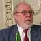

<div class="profile"><div>
  <div class="source">
Pascal (1970)
  </div>
  <div class="detail">
    
    <div class="search"><a href="http://www.google.com/cse?cx=partner-pub-6997921015773263:4467526896&ie=UTF-8&q=Niklaus Wirth" target="_blank"></a> | <a href="http://en.wikipedia.org/wiki/niklaus_wirth.jpg" target="_blank">wiki</a></div>
    <div class="name"><a href="http://cm.bell-labs.com/who/dmr/" target="_blank">Niklaus Wirth</a></div>
    <div class="info"><b>Niklaus Emil Wirth</b> (born February 15, 1934) is a Swiss computer scientist, best known for designing several programming languages, including Pascal, and for pioneering several classic topics in software engineering. In 1984 he won the Turing Award for developing a sequence of innovative computer languages.
    <p><b><a href="http://en.wikipedia.org/wiki/Pascal" target="_blank">Pascal</a></b> is an influential imperative and procedural programming language, designed in 1968/9 and published in 1970 by Niklaus Wirth as a small and efficient language intended to encourage good programming practices using structured programming and data structuring.</p>
    </div>
  </div>
  <div class="photo">
    
  </div>
</div></div>